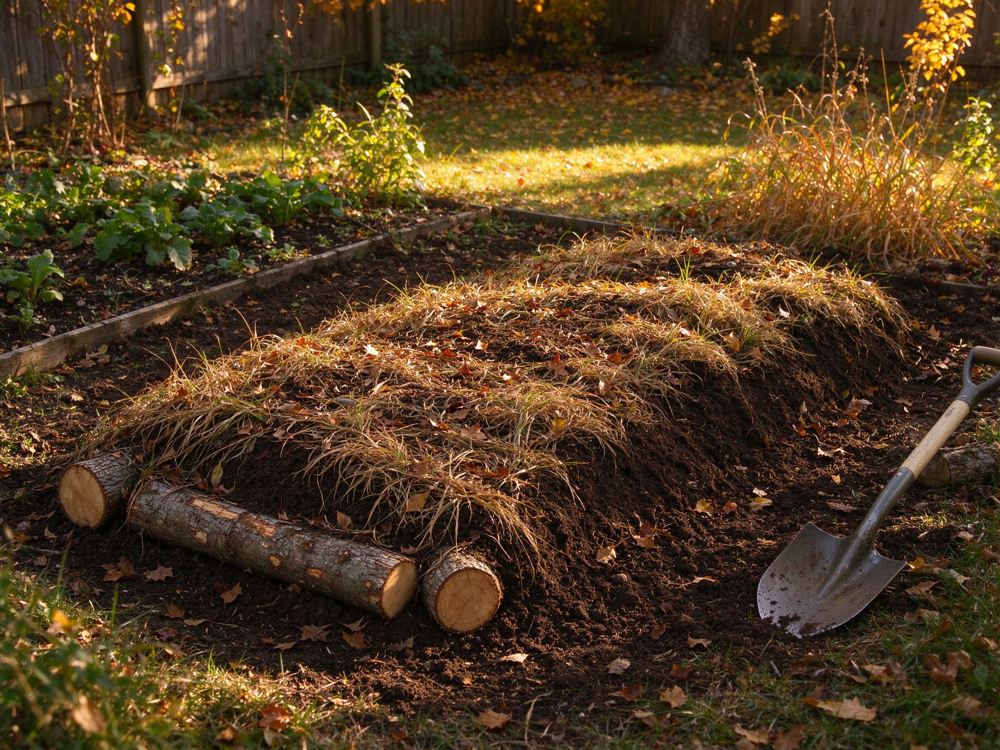

Hugelkultur: Build a Raised Bed on a Mound of Rotting Wood
Instead of filling a raised bed with bagged soil, hugelkultur fills it with logs and branches, then caps it with a few inches of soil on top. As the wood slowly rots underground, it becomes a sponge that holds water and a slow-release reservoir of nutrients for years. It's one of the smartest, most self-sufficient no-dig techniques in modern gardening — and it finds a use for every branch you ever pruned.
Why It Works
Rotting wood underground does three remarkable things: it holds water like a sponge (a hugelkultur bed can need far less watering), it releases nutrients slowly as fungi and microbes break it down, and its decomposition creates gentle warmth in the early season. Because the mound is raised and self-feeding, it suits dry climates, poor soil, and gardeners who'd rather not dig. It's a natural companion to no-till gardening and soil building.
What You'll Build
- A sunny spot — most food crops want 6+ hours of sun.
- Logs and branches — any hardwood you have: oak, maple, fruit-tree prunings, hedge clippings. Avoid treated lumber, black walnut, and evergreens (they're slow to rot or allelopathic).
- Greens and compost — grass clippings, leaves, kitchen scraps to fill gaps.
- Soil — 15-20 cm (6-8 in) of good topsoil to cap the mound.
The Method
1. Mark and lay the base
Outline the bed — it can be any length, typically 1-1.2 m (3-4 ft) wide so you can reach across. Lay the biggest logs side by side as the base layer, in a shallow trench if you have one.
2. Stack, don't stuff
Stack smaller branches and twigs on top, filling the gaps with leaves and grass clippings. You're building a loose pile, not packing it tight — air spaces help the wood start breaking down and let roots find their way in.
3. Cap it with soil
Cover the whole mound with 15-20 cm of soil. This is what you plant in, so use reasonably good soil. Tamp gently and water well. The mound will settle as the wood rots — expect it to sink a little in year one.
4. Plant
Start in the first season. Squash, tomatoes, peppers, and beans do beautifully in the warm, moisture-holding mound. For the first year, keep the soil topped up with compost — see our composting guide. In later years, the bed feeds itself more and more.
What to Expect by Year
- Year 1 — the wood is just starting to rot; soil may drop and watering is normal. Great for heavy feeders like squash and tomatoes.
- Years 2-5 — the sweet spot. The wood is actively sponging water and releasing nutrients; the bed gets easier and more productive.
- Years 5+ — the wood has mostly collapsed into rich humus; the mound settles into a fertile, low-maintenance bed.
Common Questions
Will the wood steal nitrogen from my plants?
Fresh wood can briefly tie up nitrogen while it rots — which is exactly why you cap it with plenty of soil and add a little compost in year one. Once decomposition is underway, the bed releases more than it takes.
Do I need to water less?
Often, yes. The buried wood holds moisture like a reservoir, which is why hugelkultur is a favorite in dry regions. You'll still water, but typically less and less often than a conventional bed.
Can it be small?
Absolutely. Even a small mound — a bit bigger than a wheelbarrow — made from branch prunings is a worthwhile mini-hugelkultur for one or two squash plants. It's a perfect way to reuse garden waste.
Where It Fits
Hugelkultur pairs brilliantly with other regenerative methods: layer it near a raised bed for a low-water option, and use the same self-reliant mindset as our seed-saving guide. Start small, let the wood do the work, and in a few years you'll have a bed that waters and feeds itself better than anything you can buy in a bag.